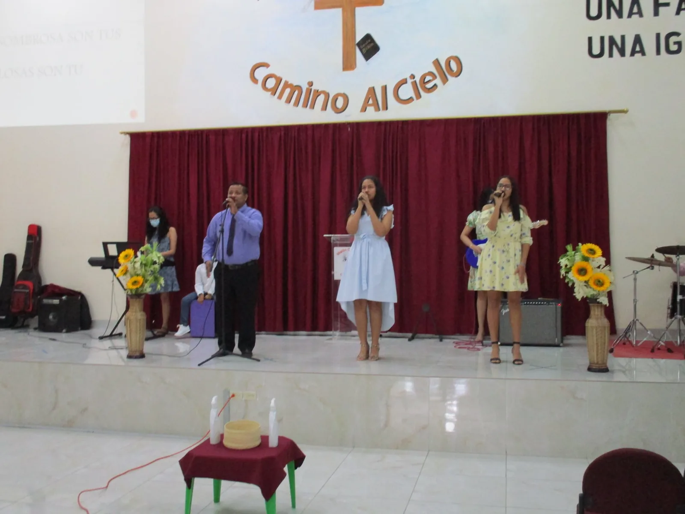
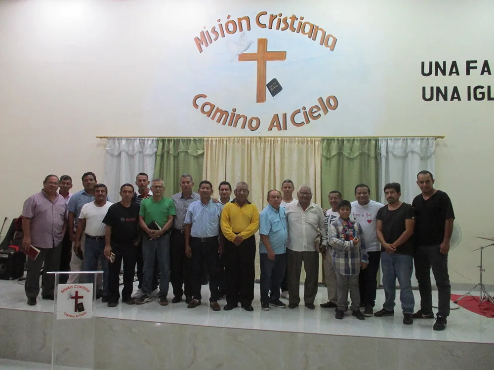
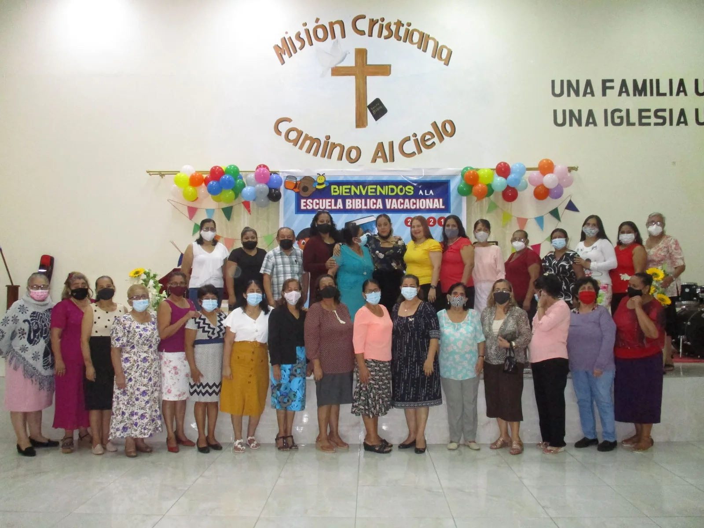
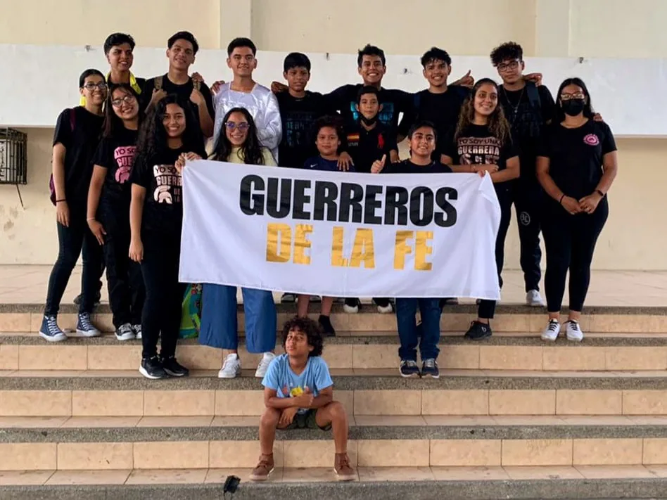

Crecer y servir
Un lugar para
cada generación.
Ministerios donde cada persona puede encontrar comunidad, desarrollar sus dones y servir a Dios.

Lunes · 20:00
Soldados de Cristo
Ministerio de Caballeros
Un espacio para fortalecer el carácter, la responsabilidad espiritual, la amistad y el servicio.

Jueves · 17:00
Mujeres Bendecidas
Ministerio de Damas
Mujeres que crecen en la Palabra, se acompañan y sirven con propósito a sus familias y comunidad.

Sábado · 18:30
Guerreros de la Fe
Ministerio de Jóvenes
Una generación que aprende a seguir a Jesús, construir amistades sanas y vivir su fe con valentía.
●
Sábado · 14:30
Niños para Cristo
Ministerio de Niños
Un ambiente alegre y seguro para conocer a Jesús mediante enseñanzas, juegos y actividades.
Servicio semanal
Adoración
Música y servicio
Personas que sirven con excelencia y un corazón sincero para guiar a la congregación en adoración.